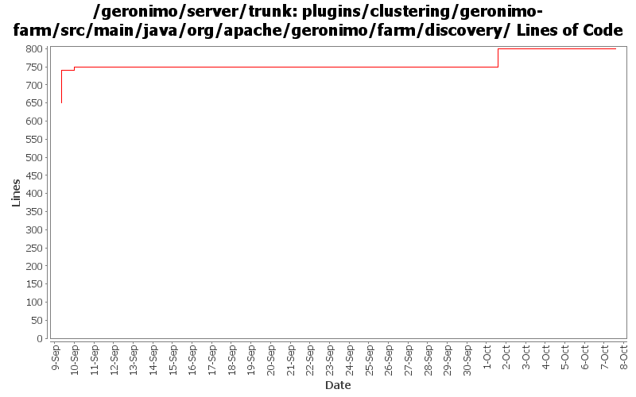

[root]/plugins/clustering/geronimo-farm/src/main/java/org/apache/geronimo/farm/discovery

| Author | Changes | Lines of Code | Lines per Change |
|---|---|---|---|
| Totals | 15 (100.0%) | 164 (100.0%) | 10.9 |
| djencks | 11 (73.3%) | 110 (67.1%) | 10.0 |
| dblevins | 4 (26.7%) | 54 (32.9%) | 13.5 |
use 239.255.3.2 as multicast host default
1 lines of code changed in 1 file:
Inroduced a MulticastLocation gbean that hold the mutlicast connection info so it can be configured in one place yet consumed by multiple gbeans.
Added a HeartbeatMonitor ghsell command (not quite working) that will allow people to see what is moving on the heartbeat.
Renamed FarmCommand to ClusterCommand and its flags to -c and --cluster
53 lines of code changed in 3 files:
GERONIMO-4304 Register allowable plugin repositories, with credentials as appropriate
2 lines of code changed in 1 file:
GERONIMO-4284 fix the jpa stuff, recover better from multicast problems, add a gshell command, restructure slightly how non-jsr88 stuff is obtained in gshell
19 lines of code changed in 1 file:
GERONIMO-4284 add discovery based on code from activemq via openejb
89 lines of code changed in 9 files: